응용지질기사 (2003-08-10 기출문제)
1과목: 암석학 및 광물학
1. 어떤 화성암의 구성광물들의 입자 크기가 작은 것부터 큰 것까지 연속적인 분포를 나타낼 때 이 조직을 무엇이라 하는가?
- 세리에이트 조직
- 반상 조직
- 등립상 조직
- 반상변성질 조직
(정답률: 70%)

2. 마그마가 분화작용을 받아 여러 가지 암석이 만들어질 때 설명이 옳은 것은?
- 산성암일수록 높은 온도에서 만들어지며 K2O, SiO2, Na2O 성분이 많다.
- 산성암일수록 석영, 감람석, 휘석, 정장석 성분이 많다.
- 염기성암일수록 흑운모, 각섬석, 석영, 사장석 성분이 많다.
- 염기성암일수록 높은 온도에서 만들어지며 CaO, MgO, FeO＋Fe2O3 성분이 많아진다.
(정답률: 55%)
3. 다음 광물 중 원소광물은 어느 것인가?
- 황철석
- 방연석
- 자철석
- 흑연
(정답률: 알수없음)
4. 다이아몬드를 이루는 원자(C)들이 이루는 화학적 결합의 종류는 어떤 것인가?
- 금속결합
- 공유결합
- 판데르바알스결합
- 이온결합
(정답률: 알수없음)
5. 암석이 주어진 환경의 변화에 의하여 에너지와 물질을 교환하면서 화성암, 퇴적암, 변성암으로 순회하는 현상을 무엇이라 하는가?
- 암석의 윤회
- 화강암화작용
- 교대작용
- 치환작용
(정답률: 100%)
6. 다음 중 불소(弗素)를 함유하는 광물이 아닌 것은?
- 녹주석(綠柱石)
- 인회석(燐灰石)
- 형석(螢石)
- 황옥(黃玉)
(정답률: 50%)
7. 주요 조암광물로서 정장석과 사장석의 분량이 비슷하고 석영이 극히 소량 들어있는 회백색의 암석으로서 조립·등립질의 암석은?
- 화강섬록암
- 현무암
- 조면암
- 몬조니암
(정답률: 알수없음)
8. 다음 그림은 어떤 결정면의 스테레오 투영법을 표시한 것이다. A점의 면기호로 알맞는 것은?
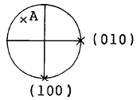
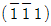
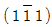
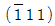
- (1 1 1)
(정답률: 알수없음)
9. 다음 광물 중 비중이 제일 큰 것은?
- 황동석
- 자철석
- 방연석
- 석영
(정답률: 알수없음)
10. 다음 중 면심공간격자의 단위포함량은?
- Z = 1
- Z = 2
- Z = 3
- Z = 4
(정답률: 알수없음)
11. 다음 광물 중 평행연정(平行連晶)으로 나타나는 것은?
- 수정
- 돌로마이트
- 황철석
- 석고
(정답률: 알수없음)
12. "The Present is the Key to the Past"의 내용이 의미하는 것은?
- 지층누중의 법칙
- 동물군 천이의 법칙
- 부정합의 법칙
- 동일 과정의 법칙
(정답률: 100%)
13. 다음 광물 중 탄성이 가장 큰 것은?
- 석영
- 백운모
- 장석
- 자연금
(정답률: 알수없음)
14. 변성작용에 영향을 주는 요인이 아닌 것은?
- 편압
- 유체
- 열
- 점성도
(정답률: 알수없음)
15. 어떤 암석을 현미경으로 관찰하였더니 석영과 정장석이 전혀 없었다. 이와 같은 특징을 가지는 암석은?
- 화강암
- 안산암
- 섬록암
- 감람암
(정답률: 64%)
16. 다음 퇴적물에서 관찰할 수 있는 특성중에서 퇴적물의 운반거리를 예상하게 할 수 있는 것은?
- 호상층리
- 원마도
- 구형도
- 사층리
(정답률: 알수없음)
17. 광물의 다색성(多色性)을 관찰하기 위한 올바른 현미경 조작은?
- 간섭상을 만들어서 관찰한다.
- 직교니콜 하에서 재물대를 회전하면서 관찰한다.
- 개방니콜 하에서 재물대를 회전하면서 관찰한다.
- 특수 대물렌즈를 사용하여 직교니콜 하에서 관찰한다.
(정답률: 알수없음)
18. 다음 중 속성작용(diagenesis)과 관계가 없는 것은?
- 다져짐작용
- 재결정작용
- 접촉교대작용
- 교결작용
(정답률: 알수없음)
19. 아르코스(arkose) 사암은 다른 사암보다 어떤 것을 더 많이 포함하고 있는가?
- 방해석
- 장석
- 운모
- 암편
(정답률: 알수없음)
20. 다음 암석 중 섬록암과 화학성분이 가장 가까운 화산암은?
- 유문암
- 조면암
- 현무암
- 안산암
(정답률: 알수없음)
2과목: 구조지질학
21. 다음 그림에서 d에서 b의 이동은?
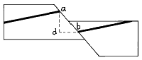
- 실이동(net slip)
- 경사이동(dip slip)
- 수평이동(heave)
- 주향이동(strike slip)
(정답률: 91%)
22. 석유가 집적될 수 있는 지질 구조와 관계 없는 것은?
- 배사구조
- 돔(Dome)구조
- 향사구조
- 단층구조
(정답률: 36%)
23. 신장절리(extension joint)는 다음 중 어느 곳에서 가장 잘 나타나는가?
- 분출암 지대
- 조산대
- 단층대
- 부정합 지대
(정답률: 알수없음)
24. 공액절리에서 두 절리면의 교차선은 어떤 주응력축에 평행한가?
- 최대 주응력축
- 중간 주응력축
- 최소 주응력축
- 수직 주응력축
(정답률: 80%)
25. 다음 중 암석의 변성을 지배하는 요소가 아닌 것은?
- 화학성분(chemical composition)
- 온도(temperature)
- 봉압(confining pressure)
- 풍화(weathering)
(정답률: 알수없음)
26. 판구조론에서 말하는 판쪽(plates)들의 경계선에 해당되지 않는 구조대는 다음 중 어느 것인가 ?
- 해저산맥대
- 대단층대
- 대습곡대
- 빙하퇴적층대
(정답률: 알수없음)
27. 만약 100 MPa의 전단 응력이 0.1/million year(my)의 전단 변형율을 형성했다면, 이 물질의 점성도(viscosity)는?
- 1 MPa-my
- 10 MPa-my
- 100 MPa-my
- 1000 MPa-my
(정답률: 알수없음)
28. 압쇄암(mylonite)의 설명 중 적절하지 않은 것은?
- 지하 5 km 이내에서 형성된다.
- 온도 250°C~350°C이상에서 형성된다.
- 엽리를 가진다.
- 선구조를 가진다.
(정답률: 알수없음)
29. 원형(圓形)의 지형을 만들기에 가장 부적합한 것은?
- 칼데라(caldera)
- 화산함몰체(cauldron)
- 저반(batholith)
- 주향이동단층(strike-slip fault)
(정답률: 알수없음)
30. 다음 중 비정합(disconformity)을 이루는 조건은?
- 부정합면 아래 심성암이 있다.
- 부정합면 아래 지층과 위의 지층의 성층면이 서로 평행하다.
- 부정합면 아래 지층이 많은 침식을 받았다.
- 부정합면 아래 변성암이 분포된다.
(정답률: 70%)
31. Creep 실험에서 견본에 일정한 응력을 가할 경우, 변형은 비교적 높은 strain비율로 일어나다가 점차로 strain비율이 일정하게 될 때까지 감소하며, 더 긴 일정시간 후에는 다시 strain비율이 증가함을 알 수 있다. 여기서 처음 단계를 무엇이라 하는가?
- Steady-state creep
- Teritiary creep
- Transient creep
- Acceleratory creep
(정답률: 알수없음)
32. 대양저 산맥(ocean ridges)에 대한 설명중 틀린 것은?
- 열곡이 발달한다.
- 높은 열류량을 나타낸다.
- 수직단층이 발달한다.
- 천발지진(30㎞ 내외)이 자주 발생한다.
(정답률: 알수없음)
33. 한반도 남부에서의 지자기 편각은 대략 어느 정도인가?
- 서쪽으로 6~8°
- 서쪽으로 10~12°
- 동쪽으로 6~8°
- 동쪽으로 10~12°
(정답률: 29%)
34. 지층의 상하를 구별하는데 이용되는 퇴적암의 일차구조와 거리가 먼 항목은?
- 연흔(ripple mark)
- 사층리(cross-bedding)
- 건열(mud-crack)
- 다이아스템(diastem)
(정답률: 84%)
35. 다음 중 지진대에 속하지 않는 곳은?
- 해구(trench)
- 해령(oceanic ridge)
- 변환단층(transform fault)
- 순상지(shield)
(정답률: 92%)
36. 단층선애(fault line scarps)의 설명으로 맞는 것은?
- 단층활동에 의해 노출된 절벽
- 상· 하반 암석의 차별침식에 의해 형성된 절벽
- 단층면에 의해 형성된 삼각형 모양의 절벽
- 절리면에 의해 형성된 절벽
(정답률: 75%)
37. 단층비탈향사(fault-ramp syncline), 단층굴곡배사(fault-bend anticline), 회전배사(roll-over anticline) 등의 지질구조가 형성되는 곳은?
- 정단층계
- 스러스트단층계
- 주향이동단층계
- 변환단층계
(정답률: 알수없음)
38. Dome이 긴 배사 구조와 다른 점은?
- 지층의 경사가 일정하지 않다.
- 지층의 주향이 일정하지 않다.
- 습곡축을 갖지 않는다.
- 복각축경사를 하지 않는다.
(정답률: 알수없음)
39. 함석유층(含石油層)을 지배하는 중요한 요소 중의 하나는?
- 암의 입자크기
- 암석의 공극율과 투수성
- 입자의 분급도(分級度)
- 입자의 원마도(圓磨度)
(정답률: 75%)
40. 지층의 경사가 한점을 중심으로 기울어져 우묵한 대접같은 구조를 가진 습곡은?
- 침강습곡
- 향심습곡
- 배사습곡
- 동심습곡
(정답률: 알수없음)
3과목: 탐사공학
41. 굴절법 탄성파 탐사에서 여러 지층중에 상부층보다 속도가 낮은 저속도층이 존재하는 경우 다음 설명 중 맞는 것은?
- 주시곡선상에 저속도층에 대응하는 직선이 나타난다.
- 저속도층으로 입사한 파는 층의 경계면에서 임계굴절파가 생긴다.
- 저속도층의 존재를 인지할 수 없다.
- 전혀 고려 대상이 되지 않는다.
(정답률: 67%)
42. 탄성파 중에 입자의 운동방향이 파의 진행방향에 역회전하는 탄성파는?
- 종파
- 횡파
- 러브파
- 레일리파
(정답률: 93%)
43. 다음 중 S.P(자연전위)탐사시 자연전위의 크기가 가장 높게 나타나는 광체는?
- 산화물 광체
- 황화물 광체
- 탄산염 광체
- 규산염 광체
(정답률: 알수없음)
44. 다음은 암석의 절대연령 측정 방법들이다. 식물화석 등의 연대측정에 가장 알맞는 방법은?
- K - Ar법
- Rb - Sr법
- U - Pb법
- C법
(정답률: 82%)
45. 퇴적층에서 이암의 함량을 측정하는데 가장 효과적인 물리검층법은 다음 중 무엇인가?
- 감마선검층
- 음파검층
- 밀도검층
- 대자율검층
(정답률: 50%)
46. 다음 분석방법 중 화학분해를 통한 시료분석 방법이 아닌 것은?
- 원자흡광분광 분석
- 프라즈마분광 분석
- 방사분광 분석
- 비색법
(정답률: 알수없음)
47. 신틸레이션 카운터를 이용한 방사능탐사는 다음 중 어느 것을 이용하여 측정하는가?
- 감마선
- 알파선
- 베타선
- 알파선 및 베타선
(정답률: 알수없음)
48. 암석의 밀도를 변화시키는 요인이 아닌 것은?
- 조암광물의 밀도
- 암석의 공극율
- 공극에 채워져 있는 유체의 종류
- 조암광물의 화학성분
(정답률: 알수없음)
49. 반사법 탄성파 탐사에서 수진기의 군설치(群設置)를 하는 목적은?
- 조사속도를 증가시키기 위해
- 반사파에 의한 진동을 구별하기 위해
- 기계 고장시의 안정을 위해
- 측선거리를 길게하기 위해
(정답률: 77%)
50. 다음 중 전기탐사의 근본원리는 무엇인가?
- 암석, 광물의 밀도 차이를 이용
- 암석, 광물의 대자율 차이를 이용
- 암석, 광물의 탄성계수 차이를 이용
- 암석, 광물의 전도율 차이를 이용
(정답률: 알수없음)
51. 댐이나 제방의 누수를 탐지하기 위해 자연전위 탐사를 실시한다고 하면, 이 때 주로 어떤 자연전위를 측정하게 되는가?
- 광화 전위
- 셰일 전위
- 유동 전위
- 확산 전위
(정답률: 60%)
52. 전극간격을 10m로 한 웨너(Wenner)식 전극배열을 이용한 전기 비저항 탐사시 전압전극에서 1볼트, 전류전극에서 0.1암페어가 측정되었을 시 조사지점의 외견 비저항은 얼마인가?
- 100Ω-m
- 222Ω-m
- 314Ω-m
- 628Ω-m
(정답률: 알수없음)
53. 다음 중 표석(漂石)의 설명으로 맞는 것은?
- 광상의 일부가 분리 운반된 것
- 용암의 일종
- 비중이 작아 물에 뜨는 암석
- 광상중에 포함된 모암의 파편
(정답률: 알수없음)
54. 다음 잔류자기중에서 안정하여 암석연대 측정 등에 가장 적합한 것은?
- 열잔류자기
- 등온잔류자기
- 화학잔류자기
- 퇴적잔류자기
(정답률: 58%)
55. 다음 중 반자성체(反磁性體)의 조건으로 맞는 것은? (단, μ = 대자율)
- μ = 1
- μ = 0
- μ ＜ 0
- μ ＞ 1
(정답률: 40%)
56. 토목 또는 건축의 기반암 조사에 cross hole seismic 조사를 시행하는 경우가 있는데 이 조사는 무엇을 측정하기 위해 시행하는가?
- Love 파의 속도
- P 파의 변위
- Rayleigh 파의 속도 와 진폭
- P 파 및 S 파의 속도
(정답률: 70%)
57. 다음 중 핵자력계(proton-precession magnetometer)는 어느 원리를 이용한 것인가?
- 항자력
- 세차운동
- 소자력
- 원심력
(정답률: 알수없음)
58. 중력탐사에서는 각종 보정작업이 중요하다. 중력탐사의 보정이 아닌 것은?
- 고도보정
- 지형보정
- 부우게(Bouguer)보정
- 심도보정
(정답률: 알수없음)
59. 다음 중 유도분극(IP)탐사에서 주파수 효과란? (단, ρ1은 낮은 주파수 혹은 직류 겉보기 비저항이고, ρ2는 높은 주파수 혹은 교류 겉보기 비저항이다.)
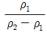
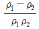
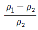
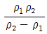
(정답률: 알수없음)
60. 지화학적 환경에 있어서 primary dispersion에 영향을 미치는 것은 다음 중 어느 것인가?
- 암석
- 토양
- 물
- 식물
(정답률: 34%)
4과목: 지질공학
61. 다음 중 피압 대수층에 해당하는 것은?
- 사층하부에 사력층이 있는 경우
- 사력층 하부에 점토층이 있는 경우
- 점토층 상하부에 사력층이 있는 경우
- 사력층 상하부에 점토층이 있는 경우
(정답률: 알수없음)
62. 어떤 토양시료의 공극율을 n(%), 공극비를 e라 할 때 공극율(Porosity)과 공극비(Void ratio)의 관계를 바르게 나타낸 것은?
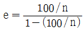
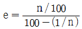
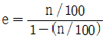
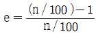
(정답률: 37%)
63. 다음 중 동다짐(Dynamic compaction) 공법에 대한 설명으로 틀린 것은?
- 전력설비가 없는 곳에서의 시공이 가능하다.
- 지지력의 소폭적인 증가가 요구될 때 효과적이다.
- 주변의 흙이 교란되지 않고 소음이 없다.
- 낙하고 조절이 가능하여 강력한 에너지를 얻을 수 있다.
(정답률: 80%)
64. 터널을 굴착하는 경우 고려해야 할 암반의 공학적 특성 중 바르게 짝지어진 것은?
- 화학적 특성과 역학적 특성
- 역학적 특성과 수리학적 특성
- 열전달 특성과 화학적 특성
- 열전달 특성과 수리학적 특성
(정답률: 알수없음)
65. 방향성 시추에 대한 설명으로 맞는 것은?
- 이방성 암석에 국한하여 실시한다.
- 시추코어를 회수할 수 없다.
- 최대 시추 가능심도는 심부 50 미터이다.
- 연직 이외의 방향에 대한 시추가 가능하다.
(정답률: 80%)
66. 함수비가 큰 세립토의 건조해가는 과정의 순서가 옳은 것은? (단, Atterberg 한계에 준할 것)
- 고체상태 - 소성상태 - 액체상태 - 반고체상태
- 고체상태 - 반고체상태 - 액체상태 - 소성상태
- 액체상태 - 소성상태 - 반고체상태 - 고체상태
- 액체상태 - 고체상태 - 반고체상태 - 소성상태
(정답률: 알수없음)
67. 수소이온 농도에 따라 광천(鑛泉)을 구분하려고 한다. pH가 2~4인 광천은 다음 중 무엇으로 분류되는가?
- 산성천
- 중성천
- 알칼리천
- 강알칼리천
(정답률: 알수없음)
68. 사면의 불안정한 거동을 촉발시키는 요인으로 가장 거리가 먼 것은?
- 지반진동
- 지하수위 상승
- 사면하부 Toe의 제거
- 연약지반 그라우팅
(정답률: 알수없음)
69. 암반 불연속면의 야외조사에 사용되는 기구가 아닌 것은?
- 클리노미터(Clinometer)
- 슈미트 햄머(Schmidt hammer)
- 줄자
- 스트레인 게이지(Strain gauge)
(정답률: 알수없음)
70. 가는 모래에 대하여 정수위 투수시험을 하여 다음과 같은 결과를 얻었다면 투수속도는 얼마나 되겠는가? (단, 시료길이 : 24.0cm, 시료의 단면적 : 706cm2, 수두차 : 48.0cm, 투수량 : 3100cm3, 투수시간 : 30초)
- 0.1464㎝/sec
- 0.7623㎝/sec
- 1.1762㎝/sec
- 1.4880㎝/sec
(정답률: 알수없음)
71. 다음 사항 중 표준관입시험에서 N치가 실제보다 낮은 값으로 측정되는 요인으로 작용할 수 있는 것은?
- 액상화 현상
- 자갈을 포함한 지층
- 심부 시추공
- 다져진 토양층
(정답률: 알수없음)
72. 화강암 분포지역에서 탄성파 탐사를 실시한 결과 그 전파속도(Vf)가 3.6㎞/sec이었다. 그 지역에서 동일 암석의 신선한 암편을 채취하여 탄성파 속도(VL)를 실내에서 구하였더니 4.2㎞/sec로 측정되었다. 이때 이 지반의 균열계수(K)는 얼마나 되는가?
- 0.86
- 0.50
- 0.66
- 0.73
(정답률: 50%)
73. 전단강도(Shear Strength)에 관한 설명으로 틀린 것은?
- 점착력과 내부 마찰각은 흙의 종류에 따라 변한다.
- 일반적으로 암석의 전단강도는 인장강도보다 크다.
- 전단응력이 전단강도보다 클 때 지반의 내부에서 파괴가 일어난다.
- 전단강도는 일축압축강도와는 무관하다.
(정답률: 알수없음)
74. 흙의 압밀배수시험에서 압축비가 0.2인 흙시료에 작용하는 하중을 10배 증가시켰을 때, 간극비의 변화는 얼마인가?
- 0.02
- 0.2
- 2.0
- 5.0
(정답률: 38%)
75. 어떤 점성토 지반에 흙에 대하여 표준관입시험을 하였더니 N = 18이었다. 이 흙의 consistency는?
- 견고
- 고결
- 중간
- 대단히 견고
(정답률: 55%)
76. Landslide의 방지방법 가운데 틀린 것은?
- 말뚝박이, 옹벽에 의한 방지
- 전기 화학적 공법에 의한 방지
- 수목 벌채에 의한 방지
- 지하수 침투방지 및 지표 배수 공법에 의한 방지
(정답률: 70%)
77. 연암의 공학적 특성으로 적당하지 않은 것은?
- 크리프 특성이 거의 나타나지 않는다.
- 물을 흡수하면 강도 저하가 많이 발생한다.
- 물을 흡수하면 팽창한다.
- 건습과정을 반복 적용하면 쉽게 열화된다.
(정답률: 92%)
78. 다음은 풍화에 따른 암석의 물리적· 역학적 변화를 설명한 것이다. 이론에 맞지 않는 것은?
- 풍화작용을 받은 암석의 탄성파속도는 줄어든다.
- 풍화가 심할수록 영(young)율이 낮아진다.
- 풍화가 진행되면 인장강도는 줄어든다.
- 풍화가 진행되면 투수율이 낮아진다.
(정답률: 85%)
79. 대수층(帶水層)의 지하수 전도능력을 표시하는 투수계수(수리전도도)는 수온이 15.5°C(60° F), 지하 동수구배가 1 : 1 인 지하수가 대수층의 단위면적을 통해 1일동안 유출되는 수량을 표시한 것이다. 이때 투수계수의 차원(Dimension) 표시가 바른 것은?
- LT
- L2T-1
- LT-1
- L3T-1
(정답률: 70%)
80. 수평방향의 투수층위에 불투수성 댐(Dam)을 축조했을 때 침윤새굴(Seepage erosion)현상이 발생된다. 침윤새굴을 방지하는 방법과 거리가 먼 것은 어느 것인가?
- 제채 하류법미(法尾)부분에 필터를 설치
- 압성토를 하여 안전율을 높임
- 투수성 지반의 투수율을 저하시킴
- 제채 하류부에 배수구를 설치
(정답률: 28%)
5과목: 광상학
81. 광물 중의 유체포유물 중에서 가장 흔히 볼 수 있는 기상(氣相)의 조성은?
- CO2
- NO2
- SO2
- K2O
(정답률: 알수없음)
82. 화강암 중의 장석, 운모, 각섬석 등이 광화가스(mineralizer)의 교대작용으로 리시야 운모로 변화하고 또한 새로운 석영이 다량 생기게 하는 작용은?
- 규화 작용
- 프로피라이트화 작용
- 그라이젠화 작용
- 리시야운모화 작용
(정답률: 알수없음)
83. 다음 중 충진(filling)작용의 증거가 아닌 것은?
- 정동과 공동
- 대칭적 호상구조
- 교질상 구조
- 모광물속으로 난 요곡면
(정답률: 40%)
84. 다음에 열거한 광물들이 공생하기 어려운 광물 조합은?
- 금, 석영, 황철석
- 철망간중석, 안티모니광, 휘수연광
- 적철석, 섬아연석, 황동석
- 코발트광, 니켈광, 은광
(정답률: 59%)
85. 보웬(Bowen)의 반응계열에서 광물이 정출되는 순서는?
- 감람석, 휘석, 각섬석, 흑운모, 석영
- 흑운모, 석영, 감람석, 휘석, 각섬석
- 휘석, 감람석, 흑운모, 각섬석, 석영
- 각섬석, 휘석, 감람석, 흑운모, 석영
(정답률: 알수없음)
86. 다음 중 무극광산의 주요 광석광물은?
- 방연광
- 섬아연광
- 에렉트럼(electrum)
- 자연은
(정답률: 알수없음)
87. 광상의 모암 변질과 관계없는 요소는?
- 모암의 종류
- 광물의 생성순서
- 광액의 Ph와 Eh
- 반응이 일어날 때의 온도와 압력
(정답률: 77%)
88. 다음 중 오피(Ophiolite)의 생성원인으로 맞는 것은?
- 화산활동에 의한 용암분출
- 마그마의 관입
- 접촉 변성 작용
- 대양지각의 압등
(정답률: 알수없음)
89. 우리나라에는 제3계 지층의 분포면적이 대단히 협소하다. 다음 지층 중 제3계 지층과 관련 있는 것은?
- 낙동층
- 장성층
- 연일층
- 신라층
(정답률: 30%)
90. 다음에서 철광석의 주요산지가 아닌 곳은?
- 인도
- 브라질
- 태국
- 호주
(정답률: 알수없음)
91. 기성광상에서는 다음 어느 원소를 포함하는 광물이 생기는 것이 특징인가?
- Ca, Fe, Al
- K, Mg, Fe
- Ca, Mg, S
- Cl, B, F
(정답률: 알수없음)
92. 열수변질 작용과 관련이 없는 것은?
- 견운모화 작용
- 황옥화 작용
- 녹니석화 작용
- 불석화 작용
(정답률: 알수없음)
93. 삼척탄전의 사동통에서 발견되는 화석은?
- Fusulinella, Eostaffella, Millerella
- Lobatannularia, Sphenopteris, Gigantopteris
- Calamites, Lepidodendron, Pecoptcris
- Cladophlebis, Pityophyllum, Podozamites
(정답률: 40%)
94. 다음 광물 중에서 내화벽돌의 원료 광물로서 가장 적절한 것은?
- 활석
- 형석
- 납석
- 방해석
(정답률: 70%)
95. 페그마타이트 광상은 대략 어느 온도에서 생성된 것인가? [단위기호= °C(섭씨)]
- 1000 이상
- 500∼600
- 375∼500
- 270 이하
(정답률: 알수없음)
96. 강원도 양양철광산에서 가장 많이 나오는 철광석은?
- 갈철석
- 적철석
- 자철석
- 황철석
(정답률: 67%)
97. 우리나라에서 마그네사이트의 큰 광상이 들어있는 지층은 다음 중 어느 것인가?
- 마천령계
- 연천계
- 옥천계
- 상원계
(정답률: 80%)
98. 2차 유화광 부화대에 대한 다음 설명 중 틀린 것은?
- 이 부화대와 가장 관계가 깊은 금속은 동이다.
- 광상의 지표부분은 풍화작용으로 인하여 고산(gossan)이 형성되어 있다.
- 이 부화대의 위치는 지하수면의 상부이며, 산화대의 하부인 지역이다.
- 이 부화대 하부에는 무변질대(hypogene zone)가 있다.
(정답률: 47%)
99. 지각을 구성하는 원소중 산소와 규소의 합한 양은? (단, 무게(%) 비임)
- 약 45%이하
- 55% ~ 60%
- 약 65%
- 70% ~75%
(정답률: 84%)
100. 해양지각을 구성하는 암석의 평균성분은 다음 어느 것에 속하는가?
- 현무암질 암석
- 화강암질 암석
- 석회암질 암석
- 처어트질 암석
(정답률: 91%)